Desenvolvedor Back End
Sou formado em Análise e Desenvolvimento de Sistemas e, atualmente, atuo como desenvolvedor Back-End, desenvolvendo aplicações utilizando principalmente Java e C#. Também possuo conhecimentos em Html, Css, JavaScript e Python, e estou em busca de uma oportunidade para aplicar minhas habilidades, aprender continuamente e contribuir para projetos inovadores.
HTML
CSS
JavaScript
Bootstrap
Tailwind CSS
Java
C# / .NET
Python
SQL Server
MongoDB
MySql
SpringBoot
Docker
Projeto de um app desktop de fazenda urbana que facilita o gerenciamento de plantações. Desenvolvido em WPF com .NET 8, ele permite registrar produções, consumo e acompanhar o uso de recursos. O design foi criado no Figma, garantindo uma experiência visual agradável. O app também permite controlar a iluminação e a irrigação, tornando o uso mais prático e eficiente.
C#
.NET
WPF
Meu portfólio foi desenvolvido com HTML, CSS e JavaScript, focando em uma interface visualmente atraente e interativa. Utilizando elementos de design com efeitos neon e um fundo interativo para criar uma atmosfera moderna e envolvente. A estrutura é responsiva, garantindo uma experiência fluida em diferentes dispositivos.
HTML
CSS
JavaScrip
O Assistente de Pesquisa é uma extensão desenvolvida em Java com Spring Boot, projetada para facilitar a análise de textos extensos. Utilizando a API do Gemini, a extensão transforma conteúdos longos em resumos curtos e concisos, permitindo que os usuários absorvam rapidamente as informações mais relevantes.
HTML
CSS
JavaScript
Java
Este é um sistema de linha de comando (CLI) desenvolvido em Java para gerenciar o cadastro de pets para adoção. Ele simula uma aplicação de adoção de pets, permitindo que o usuário, dono do abrigo de animais registre, consulte, edite e remova informações sobre os animais.
Java
Esta é a versão evoluída do sistema de cadastro de pets, agora desenvolvida em Java com Spring Boot. O sistema utiliza um banco de dados SQL para armazenar as informações e está containerizado com Docker, garantindo praticidade na execução e integração. Também é possível registrar, consultar, editar e remover dados dos pets via postman.
Java
SpringBoot
SQL
Docker